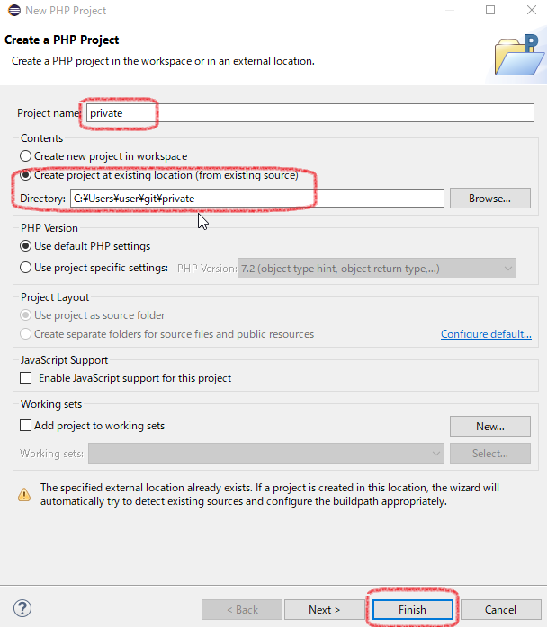
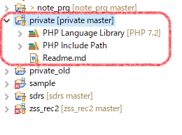
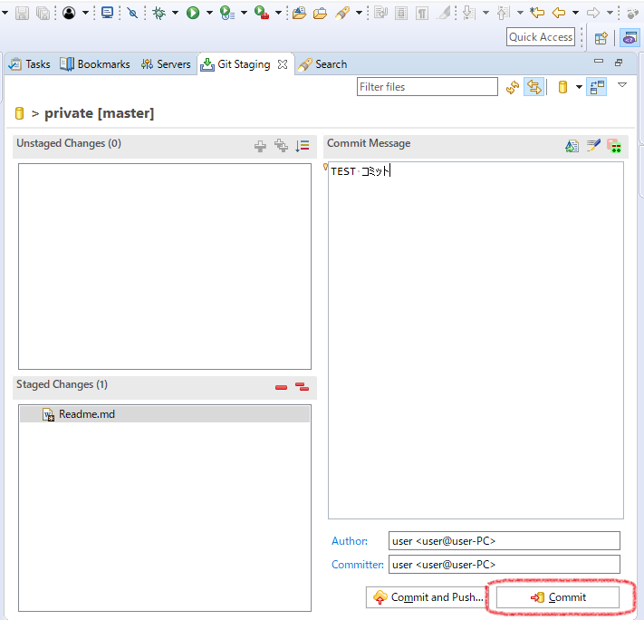

ローカルのみのgit環境を作成、およびEclipseと連携
Git Bash for Windowsで検証
-
任意の場所にフォルダを作成し、その場所へcdコマンドで移動、そして「git init」コマンドを実行する。
$ mkdir private
$ cd private
$ git init
-
privateフォルダ内にREADME.mdファイルを作成する。
-
「add」および「commit」コマンドを実行して、README.mdをコミットする。
$ git add Readme.md
$ git commit -m '初回コミット'
-
Eclipseを起動。File > New > PHP Projectと操作し、既存プロジェクト指定とプロジェクト名指定を行うだけ。


-
以上で、Eclipseからコミットができるようになる。リモートリポジトリの設定はしていないのでプッシュはもちろんできない。

参考：さくらのレンタルサーバーにGit環境を構築してみる
コマンドでコミット→プッシュ
-
cdコマンドでプロジェクトのトップディレクトリに移動する。
-
差分ファイルを追加
$ git add -A
-
コミット
$ git commit m任意のメッセージ
-
プッシュ
$git push リポジトリ名 ブランチ名
$ git push origin master
プロジェクトに紐づいているリモートリポジトリの情報を確認する。
先にcdコマンドでプロジェクトのホームディレクトリへ移動しておく。その後、下記コマンドを実行。
$ git remote -v
$ git remote -v
origin git@github.com:amaraimusi/cake_demo.git (fetch)
origin git@github.com:amaraimusi/cake_demo.git (push)
リモートリポジトリからプル（履歴が違うと怒られる場合）
$git pull --allow-unrelated-histories リポジトリ名 ブランチ名
$git pull --allow-unrelated-histories origin master
メールアドレスが登録されていない | fatal: unable to auto-detect email address
$git config --global user.email amaraimusi@example.com
参考
コンフリクト（競合）の修正
※暫定版
README.mdファイルでコンフリクト（競合）が起きたとする。
README.mdファイルファイルを開き、手作業で修正する。
修正が終わったら普通に保存。
差分ファイル追加を行う。
$ add README.md
「$ git add -A」でも良い？
コミット
$ git commit m任意のメッセージ
プッシュ
$git push リポジトリ名 ブランチ名
$ git push origin master
xxx
- ホーム
- プログラミングの覚書
- Gitの覚書